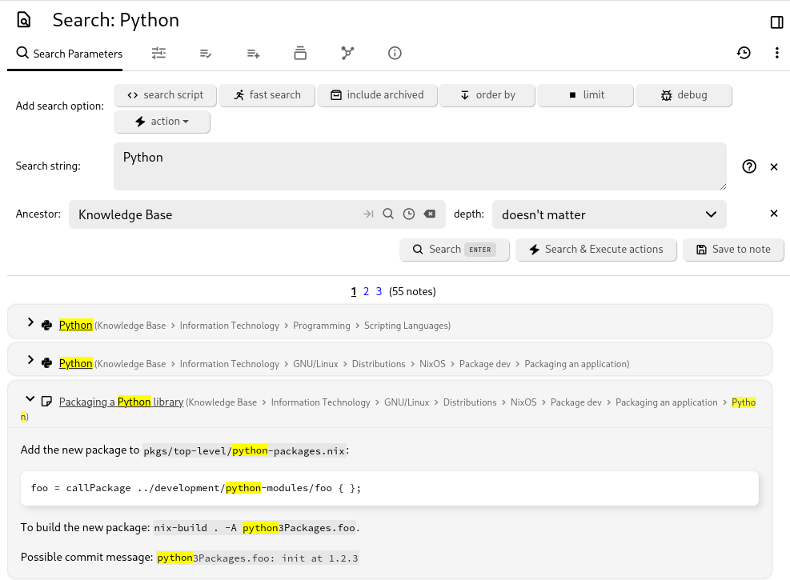

Note search enables you to find notes by searching for text in the title, content, or attributes of the notes. You also have the option to save your searches, which will create a special search note which is visible on your navigation tree and contains the search results as sub-items.
To search for notes, click on the magnifying glass icon on the toolbar or press the keyboard shortcut.
Click on which search option to apply from the Add search option section.
The options available are:
Results appear below the search pane as a list of snippet cards. Each card shows the note title and a short excerpt of the text that matched.
The search will also highlight the words from the title or content that matched:
In addition:
searchResultsPageSize option), so you do not
have to reset it on every device.rings tolkien: Full-text search to find notes containing
both "rings" and "tolkien"."The Lord of the Rings" Tolkien: Full-text search where "The
Lord of the Rings" must match exactly.note.content *=* rings OR note.content *=* tolkien: Find
notes containing "rings" or "tolkien" in their content.towers #book: Combine full-text and attribute search to find
notes containing "towers" and having the "book" label.towers #book or #author: Search for notes containing "towers"
and having either the "book" or "author" label.towers #!book: Search for notes containing "towers" and not
having the "book" label.#book #publicationYear = 1954: Find notes with the "book"
label and "publicationYear" set to 1954.#genre *=* fan: Find notes with the "genre" label containing
the substring "fan". Additional operators include *=* for "contains", =* for
"starts with", *= for "ends with", and != for "is
not equal to".#book #publicationYear >= 1950 #publicationYear < 1960:
Use numeric operators to find all books published in the 1950s.#dateNote >= TODAY-30: Find notes with the "dateNote"
label within the last 30 days. Supported date values include NOW +- seconds,
TODAY +- days, MONTH +- months, YEAR +- years.~author.title *=* Tolkien: Find notes related to an author
whose title contains "Tolkien".#publicationYear %= '19[0-9]{2}': Use the '%=' operator to
match a regular expression (regex). This feature has been available since
Trilium 0.52.note.content %= '\\d{2}:\\d{2} (PM|AM)': Find notes that
mention a time. Backslashes in a regex must be escaped.~author.relations.son.title = 'Christopher Tolkien': Search
for notes with an "author" relation to a note that has a "son" relation
to "Christopher Tolkien". This can be modeled with the following note structure:
~author.title *= Tolkien OR (#publicationDate >= 1954 AND #publicationDate <= 1960):
Use boolean expressions and parentheses to group expressions. Note that
expressions starting with a parenthesis need an "expression separator sign"
(# or ~) prepended.note.parents.title = 'Books': Find notes with a parent named
"Books".note.parents.parents.title = 'Books': Find notes with a grandparent
named "Books".note.ancestors.title = 'Books': Find notes with an ancestor
named "Books".note.children.title = 'sub-note': Find notes with a child
named "sub-note".See also Under the hood for more syntax references.
Notes have properties that can be used in searches, such as noteId, dateModified, dateCreated, isProtected, type, title, text, content, rawContent, ownedLabelCount, labelCount, ownedRelationCount, relationCount, ownedRelationCountIncludingLinks, relationCountIncludingLinks, ownedAttributeCount, attributeCount, targetRelationCount, targetRelationCountIncludingLinks, parentCount, childrenCount, isArchived, contentSize, noteSize,
and revisionCount.
These properties can be accessed via the note. prefix, e.g., note.type = code AND note.mime = 'application/json'.
#author=Tolkien orderBy #publicationDate desc, note.title limit 10This example will:
publicationDate in descending order.note.title as a secondary ordering if publication dates
are equal.Some queries can only be expressed with negation:
#book AND not(note.ancestors.title = 'Tolkien')This query finds all book notes not in the "Tolkien" subtree.
See the dedicated page to understand how progressive search works in Trilium, as well as some advanced use cases.
You can open Trilium and automatically trigger a search by including the search url encoded string in the URL:
http://localhost:8080/#?searchString=abc
| Parameter | Value | Description |
|---|---|---|
MIN_FUZZY_TOKEN_LENGTH
|
3 | Minimum characters the ~= and ~* operators accept |
MAX_EDIT_DISTANCE
|
2 | Ceiling on character changes, reached only by 7+ character terms; shorter terms allow fewer. See the Fuzzy tolerance section above |
RESULT_SUFFICIENCY_THRESHOLD
|
5 | Minimum exact results before fuzzy fallback |
MAX_CONTENT_SIZE
|
10MB | Maximum note content size for search processing |